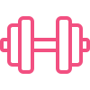
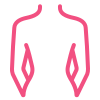
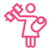
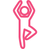
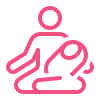

ЧЕРЕЗ КАКОЕ ВРЕМЯ ПОСЛЕ РОДОВ МОЖНО НАЧАТЬ ТРЕНИРОВКИ?
Если у тебя были естественные роды и на данный момент нет
медицинских противопоказаний, то 2 месяцев достаточно, чтобы
начать тренировки. Если было хирургическое вмешательство, то тебе
необходимо проконсультироваться с врачом.

У МЕНЯ БЫЛО КЕСАРЕВО СЕЧЕНИЕ, МНЕ МОЖНО ТРЕНИРОВАТЬСЯ?
Да, но не ранее чем через 6 месяцев после родов и по согласованию
с врачом.

БУДУТ ЛИ ТРЕНИРОВКИ ВМЕСТЕ С РЕБЁНКОМ?
Да, например с коляской.
УБЕРЁТСЯ ЛИ ПОСТРОДОВОЙ ЖИВОТ С ТРЕНИРОВКАМИ НА ЭТОЙ ПРОГРАММЕ?
Да, твоё тело станет значительно лучше, при соблюдении всех правил
тренировочного режима.
Я НАХОЖУСЬ С РЕБЁНКОМ ОДНА, КАК У МЕНЯ ПОЛУЧИТСЯ УДЕЛЯТЬ ВРЕМЯ
ПРОГРАММЕ?
Наши тренировки короткие 15 - 30 минут, они щадящие, лёгкие, можно
заниматься , например, пока малыш спит.
НУЖНО ЛИ КАКОЕ-ТО ОБОРУДОВАНИЕ ДЛЯ ТРЕНИРОВОК?
Для тренировок тебе потребуется интернет, коврик, удобная форма.

ЧТО ДЕЛАТЬ, ЕСЛИ Я НЕ УСПЕЛА ЗАКОНЧИТЬ ТРЕНИРОВКУ (НАПРИМЕР,
РЕБЁНОК ПРОСНУЛСЯ)? НАЧИНАТЬ СНАЧАЛА ИЛИ ПРОДОЛЖАТЬ С МЕСТА, ГДЕ
ОСТАНОВИЛАСЬ?
Если тренировка не была закончена в силу каких-то обстоятельств,
то к ней можно вернуться, все тренировку будут записаны, их можно
будет посмотреть в любой момент. Перед оставшимися упражнениями
необходимо снова хорошенько разогреться и сделать разминку.
КАК ПРОХОДЯТ ЗАНЯТИЯ?
В нашем закрытом телеграмм - канале, доступ к которому можно
получить после заполнения формы, будут анонсы тренировок.
Тренировки буду проходить с помощью платформы Zoom, поэтому
заранее убедитесь в том, что данная платформа установлена.
Подключиться можно через телефон, ноутбук, телевизор.

Я СТАЛА МАМОЙ БОЛЬШЕ ГОДА НАЗАД. БУДУТ ЛИ ТРЕНИРОВКИ ПОЛЕЗНЫ ДЛЯ
МЕНЯ?
Да, конечно, вы сможете:
- похудеть
- улучшить тонус мышц
- укрепить мышечный корсет
- тренироваться в комфортном режиме.